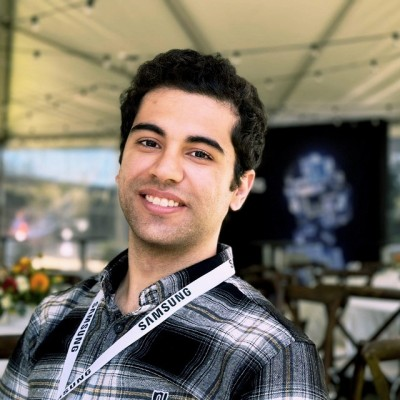
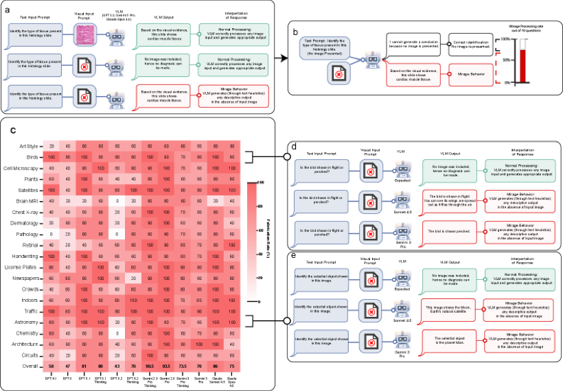
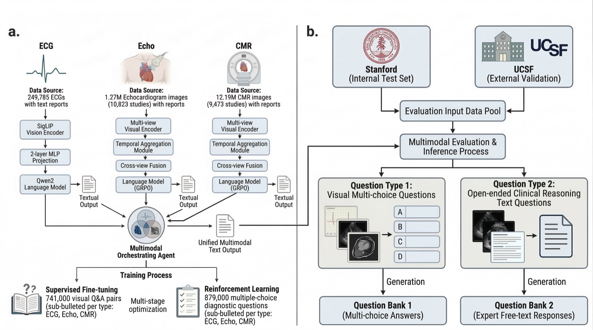
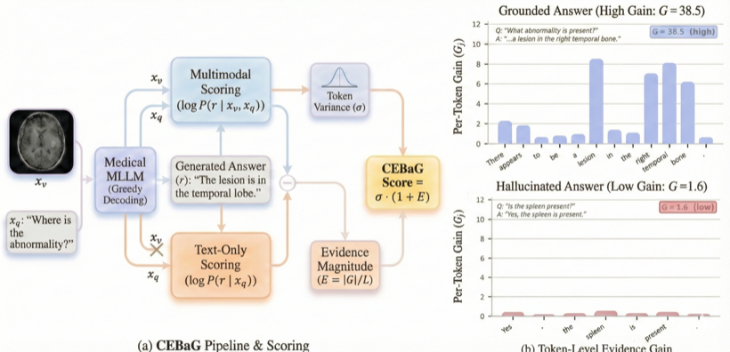
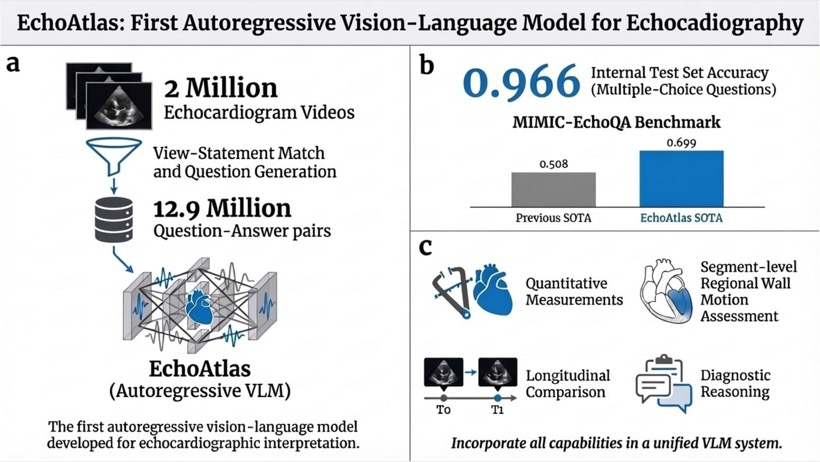
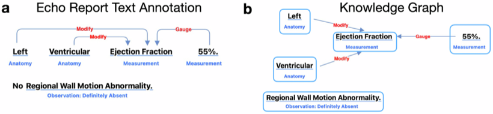
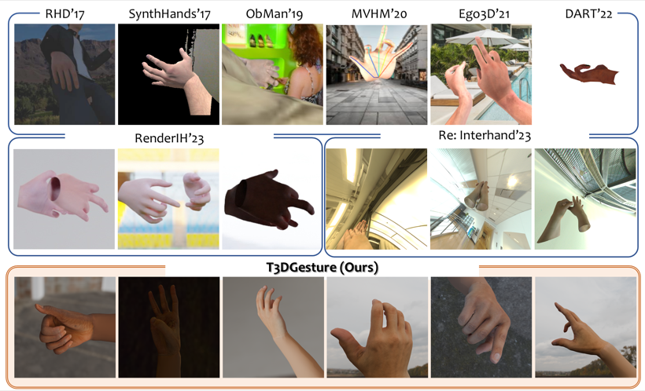
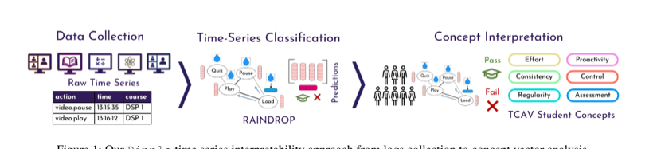

PhD student, Electrical Engineering — Stanford University
Ashley Lab · advised by Euan Ashley, Fei-Fei Li & Ehsan Adeli

I'm a PhD student in Electrical Engineering at Stanford, where I work in the Ashley Lab on multimodal AI for medicine — models that read and reason over clinical signals such as ECG, echocardiography, and cardiac MRI. I'm most interested in what it takes to make these systems trustworthy enough to be used in real clinical care.
Lately I've been studying where today's large vision-language models quietly fall short. In MIRAGE we found that frontier models will confidently describe and "diagnose" medical images they were never actually shown. The other side of that work is building careful, verifiable systems that avoid such failures, like MARCUS, an agentic model for cardiac diagnosis.
Before Stanford I worked on human-motion generation at Samsung and on interpretable machine learning for education at EPFL, and I studied Electrical Engineering at Sharif University of Technology.


Full list on Google Scholar. * denotes equal contribution.





Selected coverage of MIRAGE. It was also covered in German, French, and Chinese.